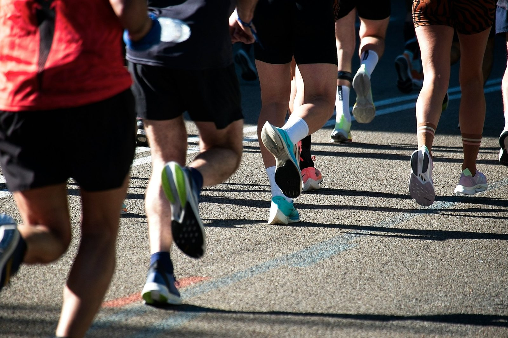

Présentation personnelle
Je m’appelle Nathan Huguenin, j’ai 22 ans et je suis étudiant en Master 2 STAPS, parcours MELS.
Le sport fait partie de ma vie depuis l’enfance. Du roller au kayak, pratiquer différentes disciplines m’a permis de développer rigueur, passion et l’envie de réaliser des projets.
Ce site présente la course « Les Gambettes Universitaires » au sein de l’université.

Le parcours M2 STAPS MELS
Le Master STAPS parcours MELS (Management des événements et loisirs sportifs) prépare aux métiers de la gestion et de l’organisation d’activités et d’événements sportifs.
Objectifs
[Compétences visées : gestion de projet, management, marketing, communication, organisation d’événements.]
L’université
Université Paris Nanterre
L’Université Paris Nanterre est un établissement public, ouvert en 1964 comme annexe de la Sorbonne. Elle est devenue une université indépendante en décembre 1970.
Son vaste campus, à l’ouest de Paris près du quartier d’affaires de La Défense, accueille plus de 30 000 étudiants (entre 31 000 et 35 000 selon les années).
Forte de son identité en sciences humaines et sociales, elle se distingue aussi par de véritables installations sportives sur le campus, rares dans l’université française, ce qui en fait un cadre idéal pour une course.
La suite du site
Ce projet présente une course à pied :